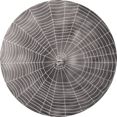
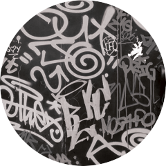
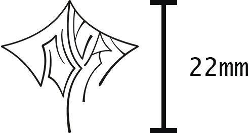
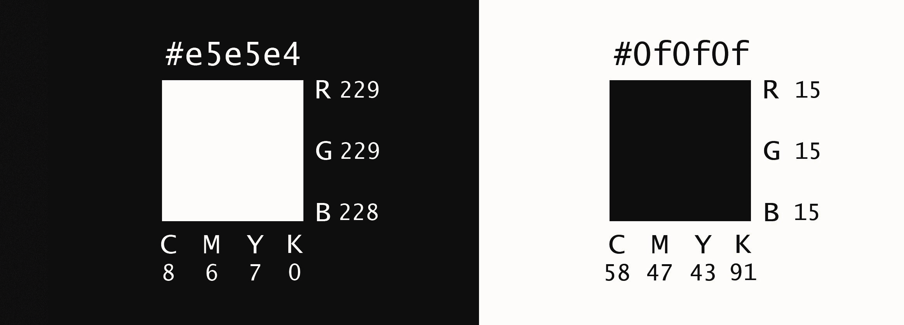
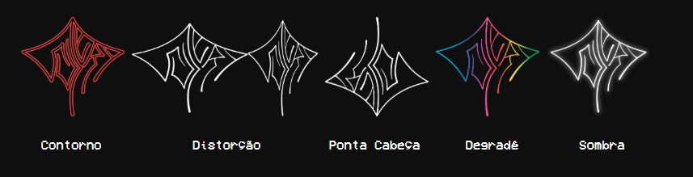

______ _ __
/ ____/___ ____ ________ (_) /_____
/ / / __ \/ __ \/ ___/ _ \/ / __/ __ \
/ /___/ /_/ / / / / /__/ __/ / /_/ /_/ /
\____/\____/_/ /_/\___/\___/_/\__/\____/
SUJERA é um projeto experimental que engloba fotografia e música. A proposta é subverter a realidade atual de Quixadá para poder criar uma nova ordem do real a partir de uma óptica de ficção cientifica distópica e futurística cyberpunk, aonde o pós-humanismo já é uma realidade.

Conectividade
Interligação
Resistência
Sujeira

Autoexpressão
Vandalismo
Velocidade
Moderno
Urbano
______ _ __ __ __ ___
/ ____/___ ____ ________ (_) /_____ ____/ /___ _ / |/ /___ _______________ _
/ / / __ \/ __ \/ ___/ _ \/ / __/ __ \ / __ / __ `/ / /|_/ / __ `/ ___/ ___/ __ `/
/ /___/ /_/ / / / / /__/ __/ / /_/ /_/ / / /_/ / /_/ / / / / / /_/ / / / /__/ /_/ /
\____/\____/_/ /_/\___/\___/_/\__/\____/ \__,_/\__,_/ /_/ /_/\__,_/_/ \___/\__,_/
Na composição da marca, a pesquisa referencial aglomera elementos naturais
e artificiais que exprimem três valores principais: Rebeldia, Velocidade e Conectividade.
A forma da têia de aranha remete a grande conectividade do futuro.
O pixo é uma resposta direta de descontentamento a pouca qualidade de vida oferecida
, portanto é inato deste a rebeldia e o enfrentamento direto e contestativo, seus traços rápidos se relacionam com a velocidade deste futuro distópico.
__ ___
/ |/ /___ _______________ _
/ /|_/ / __ `/ ___/ ___/ __ `/
/ / / / /_/ / / / /__/ /_/ /
/_/ /_/\__,_/_/ \___/\__,_/
___ __ __ __ ___
/ | _________ ___ _____/ /_____ _____ ____/ /___ _ / |/ /___ _______________ _
/ /| | / ___/ __ \/ _ \/ ___/ __/ __ \/ ___/ / __ / __ `/ / /|_/ / __ `/ ___/ ___/ __ `/
/ ___ |(__ ) /_/ / __/ /__/ /_/ /_/ (__ ) / /_/ / /_/ / / / / / /_/ / / / /__/ /_/ /
/_/ |_/____/ .___/\___/\___/\__/\____/____/ \__,_/\__,_/ /_/ /_/\__,_/_/ \___/\__,_/
/_/
A assinatura principal é feita com o logotipo na vertical.
A logotipo pode ser aplicada com rotações tanto para a esquerda como para a direita, com limite de 35° para que não se perca a legibilidade.
A assinatura também pode exceder as margens, desde que cada letra da logo continue sendo identificável.
A área de proteção da marca existe mas não é obrigatória, apenas em casos de perca da legibilidade.
A medida é de um módulo em relação aos outros.
A medida mínima para que a aplicação da marca não seja comprometida é 22mm.

______
/ ____/___ ________ _____
/ / / __ \/ ___/ _ \/ ___/
/ /___/ /_/ / / / __(__ )
\____/\____/_/ \___/____/
A SUJERA utiliza dois tons de cinza como cores principais, um mais claro e outro mais escuro.
O contraste das duas cores remetem a quebra, descontinuidade, dramáticidade e melancolia.

A marca pode ser assinada em diferentes cores, desde que estas estejam chapadas e não interfiram na legibilidade da marca.
__ __ ____ _ __ _ __
/ / / /________ / __ \_________ (_) /_ (_)___/ /___
/ / / / ___/ __ \ / /_/ / ___/ __ \/ / __ \/ / __ / __ \
/ /_/ (__ ) /_/ / / ____/ / / /_/ / / /_/ / / /_/ / /_/ /
\____/____/\____/ /_/ /_/ \____/_/_.___/_/\__,_/\____/

_______ _____
/_ __(_)___ ____ ____ __________ _/ __(_)___ _
/ / / / __ \/ __ \/ __ `/ ___/ __ `/ /_/ / __ `/
/ / / / /_/ / /_/ / /_/ / / / /_/ / __/ / /_/ /
/_/ /_/ .___/\____/\__, /_/ \__,_/_/ /_/\__,_/
/_/ /____/

Essa fonte foi escolhida pois remete ao pixo e, consequentemente, a vida urbana caótica.
É utilizada em títulos e temas do Manual Impresso.
Lucida Sans Console
Além da boa leiturabilidade, esta fonte se conecta à elementos digitais
uma vez que é a fonte principal do prompt de comando do windows.É utilizada como tipografia auxiliar no manual de marca.


_______ _____ _ ____________
/_ __(_)___ ____ ____ __________ _/ __(_)___ _ | | / / ____/ __ )
/ / / / __ \/ __ \/ __ `/ ___/ __ `/ /_/ / __ `/ | | /| / / __/ / __ |
/ / / / /_/ / /_/ / /_/ / / / /_/ / __/ / /_/ / | |/ |/ / /___/ /_/ /
/_/ /_/ .___/\____/\__, /_/ \__,_/_/ /_/\__,_/ |__/|__/_____/_____/
/_/ /____/
VCR OSD MONO
Essa fonte é baseada em fontes utilizadas em consoles de comando, além de ter boa leituralibidade
agrega um valor visual a navegação no site.
___ _ _
/ | __________(_|_)
/ /| | / ___/ ___/ / /
/ ___ |(__ ) /__/ / /
/_/ |_/____/\___/_/_/
ASCII é um código binário que codifica um conjunto de sinais. Nós nos apropriamos
do ASCII em diversos momentos por conta da enorme importância para a computação.